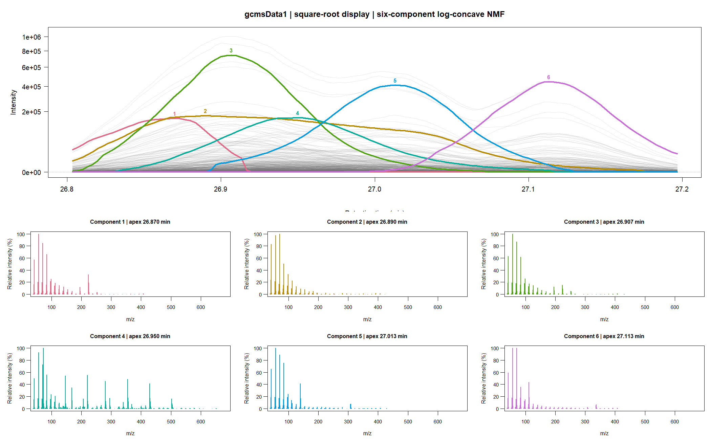
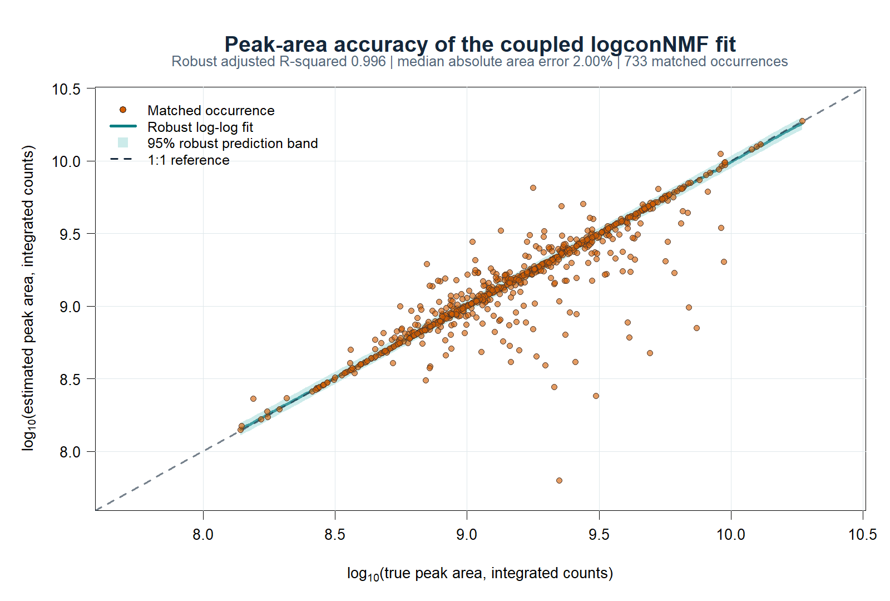
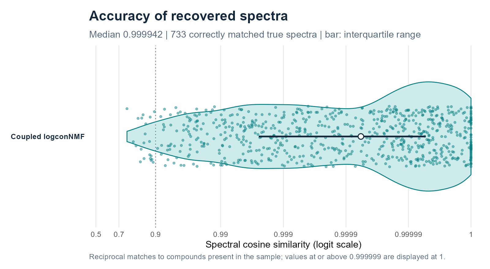
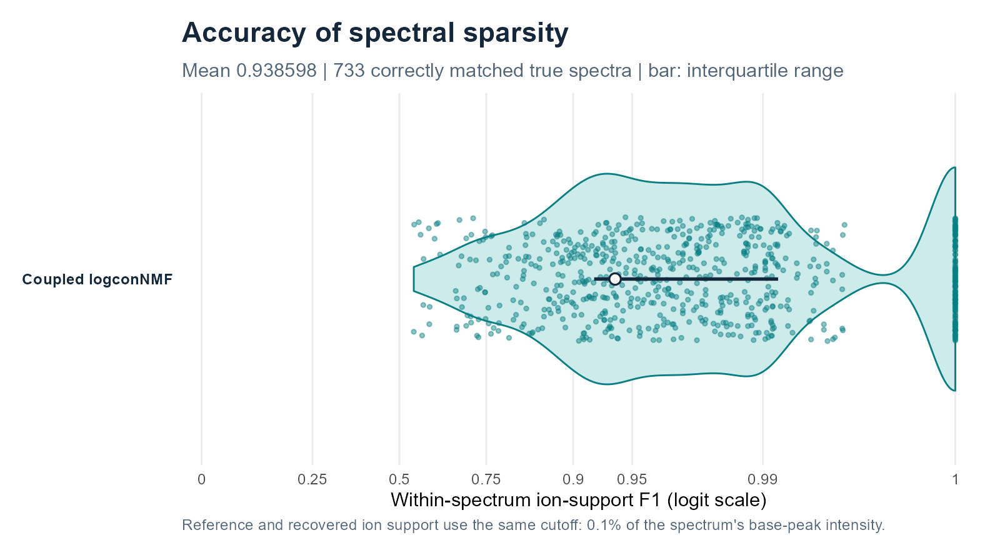
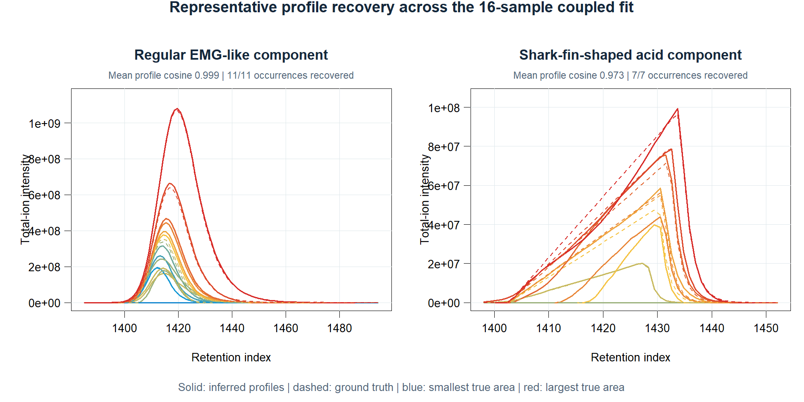

SPARSE NONNEGATIVE MATRIX FACTORIZATION · LOG-CONCAVE PROFILES
Log-concave NMF.
Automatic rank selection.
A structured nonnegative factorisation framework for ordered multichannel data, combining automatic rank tuning, hard log-concave profiles, flexible likelihoods and coupled-sample models that do not require trilinearity.
R · Grouped L0 discovery · Penalised likelihood · Flexible sample coupling

Automatic rank tuningScore additions, deletions and fusions by penalised likelihood to obtain the most parsimonious rank Hard log-concavityComponent- and sample-specific chromatographic profiles Flexible noise familiesGaussian, Poisson, quasi-Poisson, Negative Binomial and Gamma models
Nonnegative matrix and tensor factorisation to separate overlapping peaks
Hyphenated chromatography is a demanding test case for structured NMF and tensor decomposition. In GC–MS, chromatographic separation is rarely complete: when compounds co-elute, the spectrum observed at one scan is an additive mixture of their spectra. In matrix notation,
Y[i, ] ≈ sum_r H[i, r] * S[r, ] + background[i, ],
where H[, r] is the elution-mode factor and S[r, ] is the spectral-mode factor for component r. Recovering the latent components is therefore a constrained nonnegative factorisation problem: model order must be identified while chemically meaningful structure is imposed on both modes.
Nonnegative matrix and tensor factorisation have a substantial history in hyphenated chromatography. Important examples include MCR-ALS, NMF applied directly to GC–MS, global parametric analysis of multiple GC/MS data sets, PARAFAC2 for retention-time shifts, and the PARAFAC2-based PARADISe workflow. These methods established that multichannel structure can resolve co-elution and recover spectra with less interference than apex extraction alone. For the factorisation community, these data expose where unconstrained bilinear models and rigid multilinear coupling become fragile: rank, profile geometry, observation noise, background and between-sample variation all interact.
What standard formulations leave unresolved
- Optimisation and chemical rank. Bilinear and multilinear factorisations are nonconvex. Different starts can give different stationary solutions, while ALS algorithms may enter long swamps or stop at a poor local fit (Boutsidis & Gallopoulos, 2008; Tomasi & Bro, 2006). The number of components is usually supplied or selected outside the main fit. Useful diagnostics and automated classifiers exist for PARAFAC/PARAFAC2 (Bro & Kiers, 2003; Johnsen et al., 2014), but require fitting and comparing a sequence of prespecified ranks.
-
Peak geometry. Nonnegativity alone permits multimodal or jagged elution profiles. MCR-ALS can impose unimodality (Bro & Sidiropoulos, 1998), but unimodality by itself permits shoulders, plateaus and irregular tails. Log-concavity is stronger: on the positive support,
diff(log(h), differences = 2) <= 0, which implies unimodality while still allowing asymmetric and long-tailed peaks. - Instrument response, background and noise. Standard factorisations do not jointly estimate a constant or smoothly time-varying point-spread function (PSF) and a smooth nonnegative background. Least squares also imposes a constant-variance Gaussian working model. Ion production and arrival motivate count models, while detector gain, aggregation and chemical variability can produce overdispersion or approximately Gaussian intensities (Ipsen, 2015). Poisson MCR is possible (Lavoie et al., 2016), but it is a specialised extension rather than the usual MCR-ALS objective.
-
Multiple samples. PARAFAC assumes trilinearity: apart from an amplitude, each compound has the same elution profile in every sample. Shifted PARAFAC adds translations but not compound- and concentration-specific broadening or tailing. Classical PARAFAC2 is more flexible, but still requires
t(H_s) %*% H_s = Phifor every samples. Retention shifts can preserve these cross-products; changing widths, tails and pairwise overlaps generally do not. Flexible and fully constrained PARAFAC2 variants relax important parts of this restriction (Cohen & Bro, 2018; Roald et al., 2022).
| Method (typical cited formulation) | Rank selection | Chromatographic profile | Nonnegativity | Joint component selection across channels | Noise objective | Multiple samples |
|---|---|---|---|---|---|---|
| NMF for GC–MS | Supplied externally | No hard peak-shape constraint | Both matrix factors | No | Usually Euclidean or generalized KL | Separate or concatenated fits |
| MCR-ALS | Supplied; external EFA/PCA diagnostics | Optional nonnegativity, unimodality and other constraints | Optional, commonly imposed | No integrated grouped subset selection | Weighted least squares by default; Poisson MCR-LLM exists | Augmented data sets; equality/trilinearity constraints can be added |
| PARAFAC / shifted PARAFAC | Supplied; external diagnostics | One shared profile per compound; shifted variant adds translation | Optional | No | Least squares in standard algorithms | Exact trilinearity, or sample shifts only |
| Classical PARAFAC2 / PARADISe | Usually supplied; multi-rank diagnostic automation has been proposed | Sample-specific profiles with a constant cross-product constraint; no hard chromatographic shape | Historically not on every mode | No | Least squares | Retention drift and restricted shape variation |
| Flexible / fully constrained PARAFAC2 | Supplied externally | Optional nonnegativity, smoothness or unimodality; relaxed/flexible coupling | Can constrain every mode | No integrated grouped subset selection | Least squares in the cited formulation | More flexible drift and shape variation, with an explicit coupling penalty or constraint |
What logconNMF adds to constrained factorisation
Grouped selection across channels
Candidate peak positions are selected jointly over detector channels, rather than thresholded ion by ion. Final rank moves are checked on every original channel.
Automatic rank tuning
Score additions, deletions and fusions by penalised likelihood to obtain the most parsimonious rank.
Hard log-concave profiles
Every retained profile is nonnegative, contiguous and log-concave during fitting—a stronger constraint than post-hoc unimodality.
PSF starts, individual final shapes
estimatePSF() estimates a constant or time-varying PSF for initialisation; each final compound occurrence receives its own width and tail.
Background and noise fitted jointly
A smooth nonnegative background remains in the model. Flexible likelihood families cover count-like, overdispersed and continuous measurements.
Shared spectra without trilinearity
Samples retain their original grids, shapes, locations and areas. Monotone time warps model drift, and compounds may be absent.
Structured PSF starts, grouped screening, original-channel refinement, profile restarts and criterion-checked fusion reduce sensitivity to poor starts. The same formulation applies to other ordered multichannel signals with nonnegative, single-peaked components.
Installation
install.packages("remotes")
remotes::install_github("tomwenseleers/logconNMF", subdir="logconNMF")Log-concave NMF for single samples
This deliberately small test window contains six co-eluting hydrocarbons and is used to make the recovered components easy to inspect. It is not a scale limit: logconNMF runs efficiently on full sample matrices with approximately 10,000–15,000 time scans or more. The initial dictionary X places a narrow Gaussian point spread function (PSF) at each possible peak location. The factorization can move away from that shape and gives each retained component its own log-concave profile.
library(logconNMF)
data(gcmsData1)
Y <- gcmsData1
g <- convKernel("gaussian", 65L, list(sigma = 8))
X <- convMatrix(g, nrow(Y))
fit <- logconNMF(Y, X = X, background = matrix(1, nrow(Y), 1L),
family = quasipoisson("identity"), precluster = 16L)
fit$rank # estimated number of components
profiles <- fit$H # scans x components
loadings <- coef(fit) # components x original channels
spectra <- coef(fit, normalize = "l1")
GIC(fit)The columns of profiles sum to one, so each row sum in loadings gives the component’s total fitted signal across scans and channels. Grouping similar channels can speed up the initial search. The reported spectra use every original channel.

Each spectrum is displayed on a square-root relative-intensity scale.
Beer volatiles: compound-specific log-concave peak shapes
A beer-headspace window provides a more demanding real-data example. Narrow, partially overlapping volatiles occur alongside a broad, strongly asymmetric acid peak. Instead of forcing one common PSF on every compound, the final factors act as compound-specific log-concave effective peak-shape functions: they can be narrow, broad or strongly asymmetric while remaining nonnegative and single-peaked. The associated spectra are estimated jointly from all 518 mass channels.
Observed ion traces are shown in grey; coloured curves show the fitted compound contributions. Component 17 captures the broad asymmetric acid signal without imposing its shape on the narrower neighbouring peaks.
Coupled log-concave NMF for multiple samples
For related matrices, logconNMF fits Y_s ≈ H_s %*% S + B_s %*% A_s. The spectral factor S is shared, while every sample retains its own scan grid, log-concave profiles H_s, component areas and smooth background. Monotone time warps model retention drift, and a component may be absent from any subset of samples. This shares chemical information without imposing PARAFAC trilinearity or the PARAFAC2 constant-cross-product constraint.
The coupled implementation likewise scales to large experiments comprising hundreds or even thousands of samples. Parallel sample-level operations and blockwise, disk-backed refinement keep memory and computation manageable as the experiment grows.
The coupled factorisation was evaluated inside a 16-sample GC/MS benchmark with 100 reference compounds, 1,200 scans and 258 channels per sample. Its 769 true sample–compound occurrences include absent compounds, concentration-dependent broadening, retention drift, a shark-fin-shaped acid, a smooth experimental background and quasi-Poisson noise. The plots below summarise the coupled logconNMF result. On this benchmark, its recovery and reconstruction metrics are exceptionally strong: among the purpose-built workflows tested, it achieves the highest sensitivity, peak-level F1, ion-support F1, spectral cosine, profile cosine and peak-area agreement. Taken together, these results are nothing short of spectacular, including for the broad shark-fin-shaped acid and the smallest peak-size quartile. The full GCMSprime benchmark reports the complete comparison with MS-DIAL, mzmine GC-EI, eRah, AMDIS, xcms + CAMERA and MSHub.
Area and spectral summaries are conditional on correctly matched true components and should therefore be read together with occurrence recovery and false-positive counts (90 in this benchmark). Ion-support F1 applies the same 0.1% of base-peak cutoff to the reference and recovered spectra.








The coupled tutorial explains shared spectra, sample-specific profiles, missing compounds and the common rank-selection objective in detail.
Choose a workflow
| Data and objective | Method |
|---|---|
| Estimate a common response shape from a standard or overlapping signals |
Estimate PSFs with estimatePSF(). The returned sparse design can use a constant or time-varying PSF. |
| Resolve components with individual shapes in one matrix |
Sparse log-concave NMF with logconNMF(). The tutorial covers rank selection, backgrounds and flexible noise families. |
| Share spectra across related samples |
Coupled log-concave NMF with logconNMF(). Each sample retains its own scan grid, peak shapes and areas. Components may be absent from individual samples. |
For a known and common PSF, L0glm fits the sparse convolution model directly. GCMSprime uses logconNMF for chromatogram files, retention-index calibration and library search. The algorithm and theory give the objectives, shape constraints and mathematical pseudocode.
Selected literature
The comparison above draws on the following methodological and chromatography-specific work.
Matrix factorisation and curve resolution
- de Juan A, Jaumot J, Tauler R (2014). Multivariate Curve Resolution (MCR). Solving the mixture analysis problem.
- de Juan A, Tauler R (2021). Multivariate Curve Resolution: 50 years addressing the mixture analysis problem—A review.
- Gao H-T, Li T-H, Chen K, Li W-G, Bi X (2005). Overlapping spectra resolution using non-negative matrix factorization.
- van Stokkum IHM, Mullen KM, Mihaleva VV (2009). Global analysis of multiple gas chromatography–mass spectrometry (GC/MS) data sets: A method for resolution of co-eluting components with comparison to MCR-ALS.
- Lavoie FB, Braidy N, Gosselin R (2016). Including noise characteristics in MCR to improve mapping and component extraction from spectral images.
Tensor factorisation for chromatographic data
- Bro R, Andersson CA, Kiers HAL (1999). PARAFAC2—Part II. Modeling chromatographic data with retention time shifts.
- Amigo JM, Skov T, Coello J, Maspoch S, Bro R (2008). Solving GC–MS problems with PARAFAC2.
- Johnsen LG, Amigo JM, Skov T, Bro R (2014). Automated resolution of overlapping peaks in chromatographic data.
- Johnsen LG, Skou PB, Khakimov B, Bro R (2017). Gas chromatography–mass spectrometry data processing made easy.
- Cohen JE, Bro R (2018). Nonnegative PARAFAC2: a flexible coupling approach.
- Roald M, Schenker C, Calhoun VD, Adalı T, Bro R, Cohen JE, Acar E (2022). An AO-ADMM approach to constraining PARAFAC2 on all modes.
- Sorochan Armstrong MD, Hinrich JL, de la Mata AP, Harynuk JJ (2023). PARAFAC2×N: coupled decomposition of multi-modal data with drift in N modes.
Shape constraints, rank diagnostics and statistical modelling
- Bro R, Sidiropoulos ND (1998). Least squares algorithms under unimodality and non-negativity constraints.
- Eilers PHC (2005). Unimodal smoothing.
- Bro R, Kiers HAL (2003). A new efficient method for determining the number of components in PARAFAC models.
- Boutsidis C, Gallopoulos E (2008). SVD based initialization: a head start for nonnegative matrix factorization.
- Tomasi G, Bro R (2006). A comparison of algorithms for fitting the PARAFAC model.
- de Rooi JJ, Eilers PHC (2011). Deconvolution of pulse trains with the L0 penalty.
- Ipsen A (2015). Derivation from first principles of the statistical distribution of the mass peak intensities of MS data.
Citation
An article describing the methods implemented in logconNMF is in preparation. If you use the package before the article is formally published, we would appreciate a citation to the package:
Wenseleers T, Vanderaa C (2026). logconNMF: Log-Concave Nonnegative Matrix Factorization with Automatic Rank Selection. R package version 0.1.0.9000, https://tomwenseleers.github.io/logconNMF/.
The Authors and Citation page also provides the citation in BibTeX format. Please also cite the methodological sources linked in the help pages where relevant.